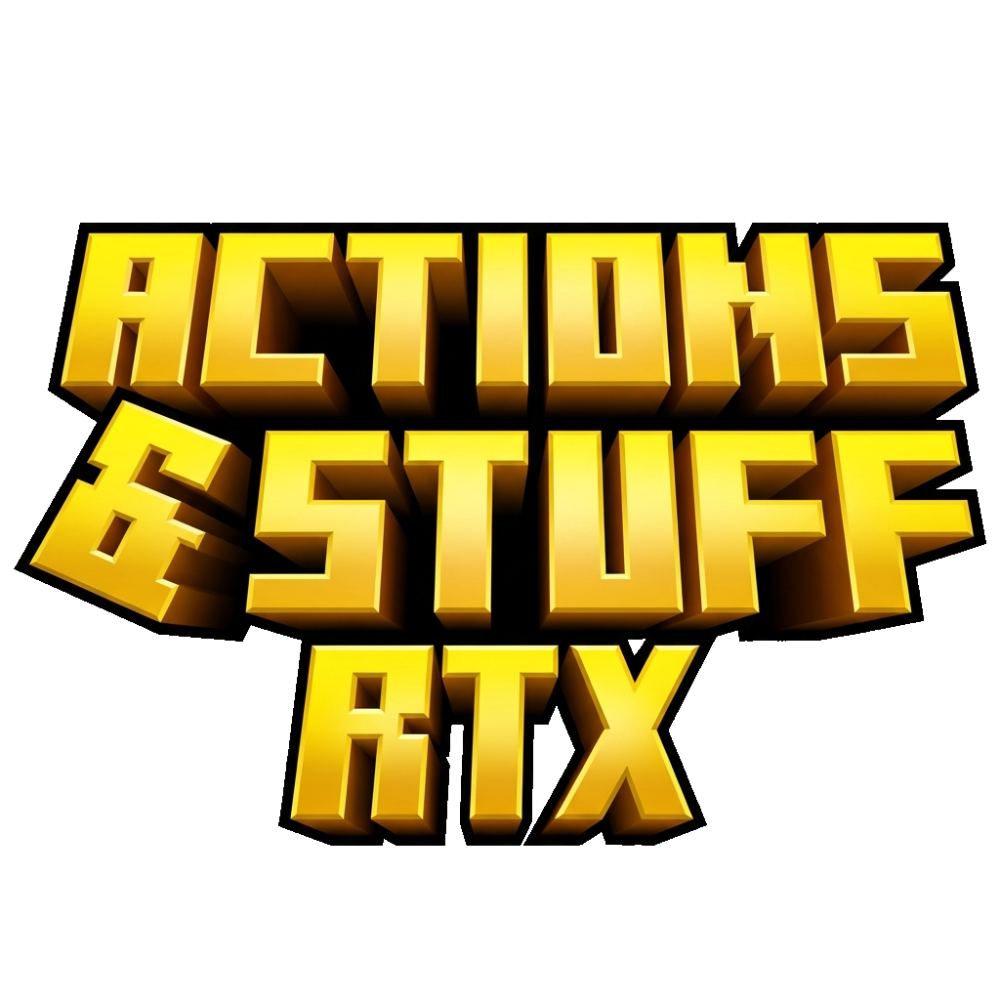

Web Patcher
Turns your own Marketplace copy of Actions & Stuff into the RTX version, right here in the browser, and installs it straight into Minecraft. Your pack never leaves your PC.
Not open yet
The Web Patcher is still being tested. Until it is ready, use the desktop patcher: it does the same and more.
Download the desktop patcherPlease use Chrome or Edge
The Web Patcher installs the pack straight into your Minecraft folder. Only Chrome and Edge let a website write to a folder you choose; this browser does not.
Or use the desktop patcher-
1 Choose your Minecraft folder
Open Minecraft once so the Marketplace pack is downloaded, close it, then pick this folder:
%APPDATA%\Minecraft BedrockOlder Minecraft (Microsoft Store) install?
%LOCALAPPDATA%\Packages\Microsoft.MinecraftUWP_8wekyb3d8bbwe\LocalStateTip: paste the path into the address bar of the folder dialog. Your browser asks to let this site view and edit the folder: it reads your A&S copy from
premium_cacheand writes the RTX pack intoresource_packs. Nothing is uploaded. -
2 Patch
Choose your folder first.
-
3 Patch & install
- Reading your pack
- Downloading the patch
- Checking the download
- Applying the RTX patch
- Installing into Minecraft
Next: start Minecraft and turn the pack on under Settings → Global Resources, together with BetterRTX.
Need .zip/.mcpack input, backups or cleanup? Use the desktop patcher. Problems? Discord